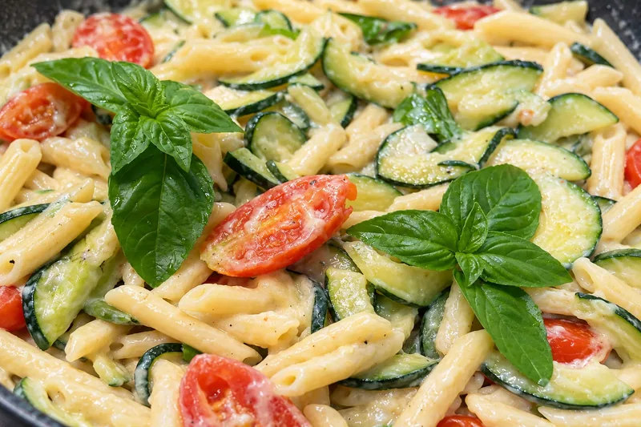
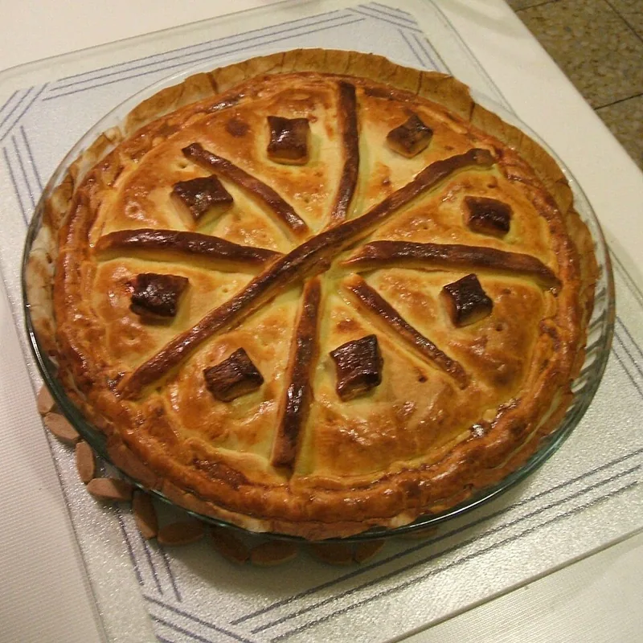
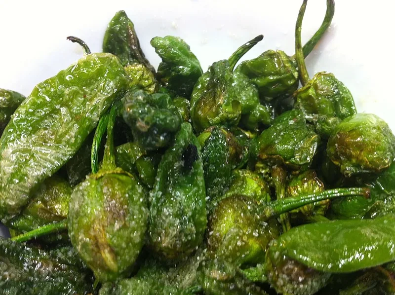
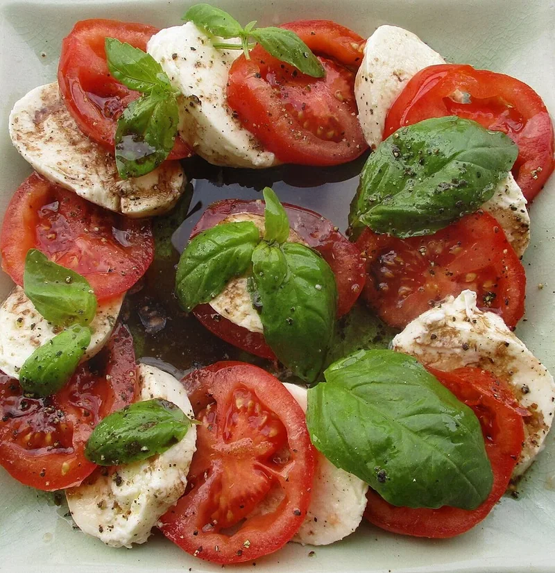
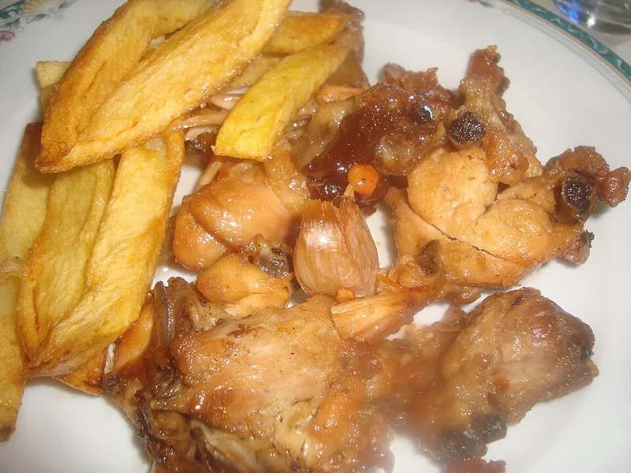
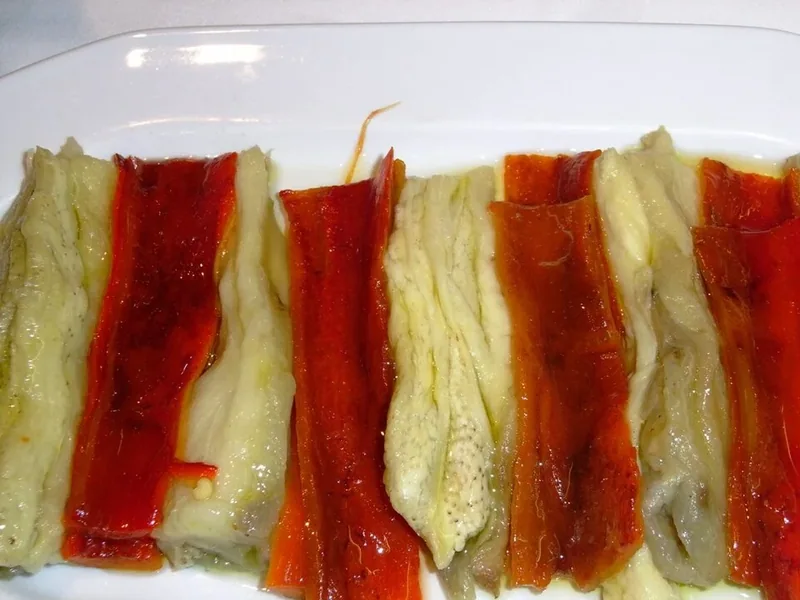
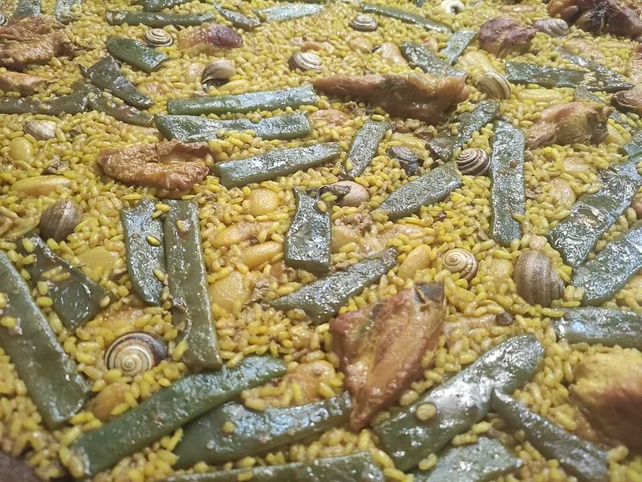
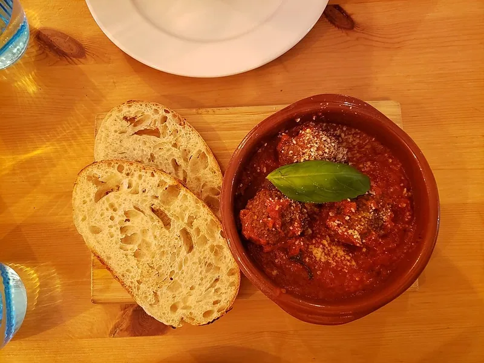
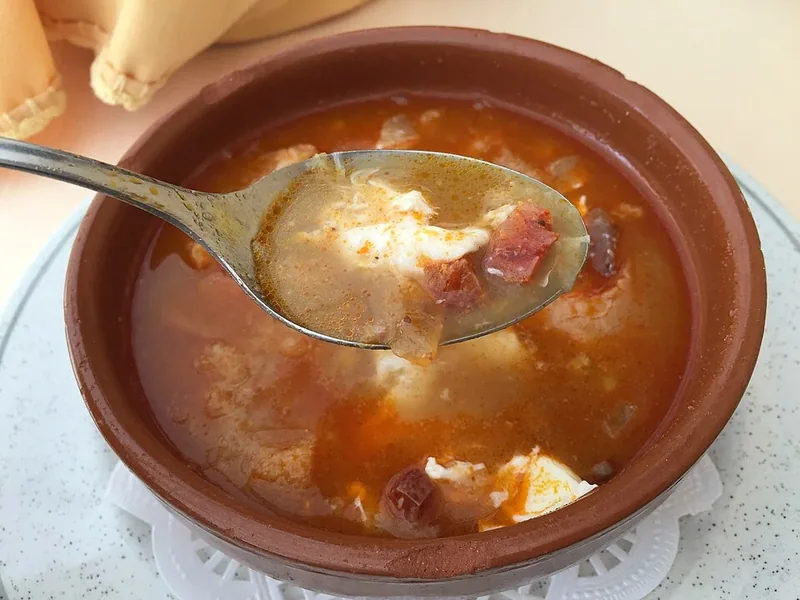
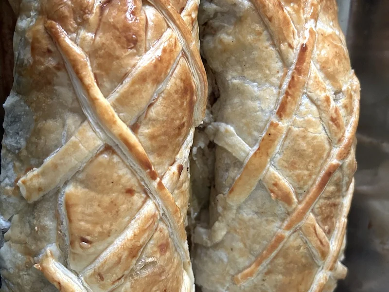

Entre semana
7 cenas rápidas para cuando no sabes qué cocinar
Siete ideas para cenar entre semana: ensaladas, pasta, salmón y una sopa caliente. Elige según lo que tengas y consulta cada receta paso a paso.
Ver las 7 recetasDel recetario a tu mesa
No siempre te falta una receta. A veces lo difícil es elegir: qué cenar hoy, qué llevar a una mesa con amigos o con qué acompañar el plato principal.
Aquí reunimos recetas que ya están en la web, con ideas para combinarlas y organizarte. Cada guía te lleva a sus ingredientes y pasos, sin sustituir la receta original.

Entre semana
Siete ideas para cenar entre semana: ensaladas, pasta, salmón y una sopa caliente. Elige según lo que tengas y consulta cada receta paso a paso.
Ver las 7 recetas
Una mesa compartida
Organiza una cena con amigos con ocho recetas del recetario y tres propuestas de menú. Combina platos para compartir sin acabar toda la noche en la cocina.
Ver las 8 recetas
Para abrir boca
Diez aperitivos con pan, verduras, cremas frías y patatas. Ideas para compartir, con sus tiempos reales y consejos para no terminarlo todo a la vez.
Ver las 10 recetas
Despensa sencilla
Ocho recetas con listas de ingredientes cortas: pasta, verduras, pan y un postre. Elige sin confundir pocos ingredientes con poco tiempo de cocinado.
Ver las 8 recetas
En los fogones
Ideas para cocinar sin encender el horno: pasta, pollo, pescado, verduras y platos de cuchara. Ocho recetas con distintas técnicas y tiempos.
Ver las 8 recetas
Para acompañar
Verduras asadas, guisos de hortalizas y ensaladas para acompañar un principal. Seis recetas y criterios para elegir sin repetir salsas ni preparaciones.
Ver las 6 recetas
Fin de semana
Arroces, fideuà, moussaka y guisos para una comida de domingo. Ocho platos principales y consejos para elegir uno sin complicar todo el menú.
Ver las 8 recetas
Organiza la cocina
Qué puedes adelantar y qué debes terminar al servir: ocho recetas con masa, salsa, reposo o enfriado para organizar la cocina antes de una comida.
Ver las 8 recetas
Aprovecha lo que tienes
Pan para tostar, migas, sopa y cremas frías: siete recetas para aprovechar el pan de otro día según la textura que necesites en cada plato.
Ver las 7 recetas
Una comida especial
Wellington, salmón, bacalao, merluza, suquet y arroz negro: seis principales para una comida especial, con el trabajo y los acabados que pide cada uno.
Ver las 6 recetas